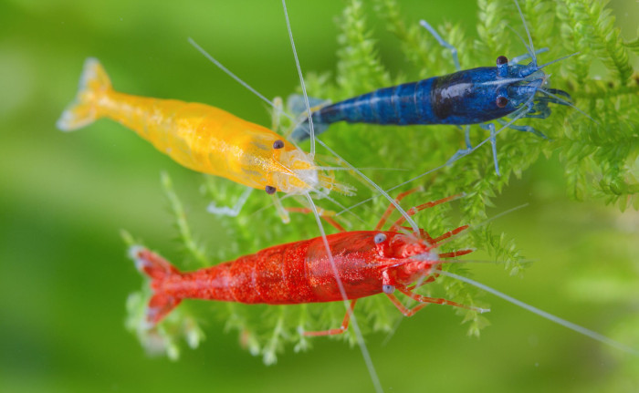

Cherry Shrimp, Neocaridina denticulata sinensis, are one of the most popular freshwater shrimp in the aquarium hobby alongside the ghost shrimp and the amano shrimp. Cherry Shrimp are known for their small size and bright red color. They can live up to two years in an aquarium and are simple to take care of. Cherry Shrimp care requires following just a few simple steps to keep your shrimp happy and healthy.
Follow this guide and soon you will be enjoying the beauty and interesting behavior of your very own Cherry Shrimp aquarium.
CHERRY SHRIMP COLOR
In nature, shrimp have a greenish-brown color. This is great for hiding from hungry predators. However, through selective breeding, brightly colored variations have been created for aquarium lovers to enjoy. This includes the Red Cherry Shrimp. These shrimp get these colors from something called chromatophores, which is when the cells on an animal's surface contain pigments. These pigmented cells give shrimp their bright coloration.
These color types and corresponding chromatophores include:
- Yellow - The yellow color is caused by xanthophores.
- White - White coloration is caused by leucophores.
- Blue - Iridophores reflect blue light.
- Red - The red color is caused by erythrophores.
- Violet - Violet is a mixture of iridophores (blue) and erythrophores (red).
- Black - Melanophores are black.
- Chocolate - Brownish melanophores. Additional erythrophores (red) or xanthophores (yellow) can add to the brown coloration.
- Clear - No color due to lack of chromataphores.
CHERRY SHRIMP AQUARIUM NEEDS
An important thing to understand about Cherry Shrimp keeping is that these tiny shrimp are incompatible with nearly all freshwater fish. In nature, many fish eat shrimp and other crustaceans. As a result, their brains are programmed to bite, nip, crunch and swallow anything that looks shrimp like. Even if the shrimp is the same size as the fish, the fish will constantly poke and chase it.
Now add in their bright coloration and Cherry Shrimp are like a flashing sign that says, “Eat me, I’m tasty!” This is why successful shrimp keepers prefer to set up a dedicated shrimp tank. It allows the shrimp to feel safe and explore the aquarium without having to hide from predators.
We’ve covered how to set up a shrimp aquarium in detail in another article. But here is a short list of items you’ll need to provide a suitable environment for Cherry Shrimp.
- An aquarium in the 3 to 10 gallon range is ideal for Cherry shrimp. A larger aquarium is not essential but it does allow for more complex aquascaping with plants, rocks, logs and other items.
- LED light fixture that highlights the shrimp’s beautiful coloration. Lighting is essential for keeping live plants too. LED lighting is much cooler than traditional aquarium lighting and uses very little energy.
- Aquarium heater to stabilize the water temperature and prevent fluctuations
- A small filter that does not create a lot of turbulence in the tank. Cherry shrimp don’t like to be “blasted” with strong water flow.
Cherry Shrimp also like places to explore and things to climb on. Create structure with aquarium-safe rocks and drift wood. Specialty shrimp caves and homes are also available on Amazon. Cherry Shrimp really like to climb on aquatic plants as well. As an added benefit, live plants also look great and act as a natural filtration systems that reduce nutrients that stimulate algae growth. If you don’t want live plants, there are plenty of silk or plastic aquarium plants on Amazon that you can use.
Experienced shrimp keepers claim that shrimps' colors will lighten if the gravel in the tank is lighter in color. Consider a brown or black substrate to keep your shrimps' colors bright and vivid.
CHERRY SHRIMP AND WATER QUALITY
Cherry shrimp are not picky about water parameters but they don’t like fluctuations in temperature and water chemistry. Dechlorinated tap water works well with Cherry shrimp provided that the pH is between 6.0 and 7.6. pH should be adjusted if it is out of this range. Water hardness is not critical but should remain stable. When making water changes, make sure there are no dramatic changes in pH or hardness.
Shrimp thrive in a wide variety of temperature ranges. The aquarium can be kept at 65-80°F. But wild temperature swings must be avoided. A submersible aquarium heater will prevent low-temperature shock. Also, when topping off or making water changes, let the water warm up to avoid rapid temperature swings.
A WORD ABOUT COPPER
Cherry shrimp are very sensitive to copper. In trace amounts copper is an essential element in their diet. Shrimp blood even uses copper to carry oxygen, which gives shrimp blood its blue color. But too much copper can kill shrimp. Tap water in homes can contain high levels of copper from copper piping. If you see blue or green stains in the sink, toilet or bath tub, you’ve got copper in the water supply.
If your tap water has high levels of copper, consider using “spring” or “filtered” water in your shrimp aquarium. Avoid distilled or reverse osmosis water. These types of highly purified water contain no minerals or pH stabilizing carbonates. Spring and filtered water typically contain a variety of minerals but no harmful copper or other metals that can harm shrimp.
Some water conditioners contain a metal detoxifying chemical but they may not be strong enough to render all of the copper harmless to the shrimp.
CHERRY SHRIMP AND WATER CHANGES
If you’re new to aquarium keeping, you may not understand why water changes are necessary. Aquariums are “closed aquatic systems.” Tropical streams are constantly flushed with water from springs, upstream tributaries and rain. However, aquariums have no natural flushing system. The only way for new, clean water to get into the tank is through a partial water change.
Over time, aquarium water changes for the worse. Natural organic substances from the breakdown of algae, plants, fish waste and prepared food builds up in the water. This causes a tea like discoloration that reduces light penetration. Research has proven that aquariums with a high level of organic waste also have more problems with disease and poor health. While aquarium filters help, water changes are essential for replenishing minerals while reducing excess salts and waste materials.
Algae promoting phosphate and nitrate also increase over time. Partial water changes dilute these nutrients and lower the chances of algae growth on the rocks, gravel and aquarium glass.
Changing 10% of the water every week or 20% every two weeks is recommended.
Use a siphon tube or gravel cleaner to remove old water and particles of debris. Be careful not to suck up a curious shrimp. They love to explore new things in their tank, even a suction tube! When replacing the water, make sure it is about the same temperature as the remaining aquarium water.
FEEDING CHERRY SHRIMP
Cherry Shrimp are omnivores, meaning they eat both plant and animal-based diets. This makes the feeding aspect of shrimp keeping very easy. The natural food for shrimp is live algae and biofilm. Biofilm is a combination of microscopic bacteria, algae cells and other tiny life forms invisible to our eyes.
Shrimp forage for this live food as they explore the aquarium. Shrimp will climb on the aquarium glass, plants and driftwood, scraping away biofilm and live algae. As a result, there is no need to maintain a “spotless” algae-free shrimp aquarium because it provides a healthy diet.
Cherry Shrimp will eat any type of aquarium fish flake or pellet. Specialty shrimp pellets are also available. Some shrimp keepers also experiment with small bits of soft vegetables like zucchini. As a general rule, be careful never to let food particles decay in the aquarium.
When feeding shrimp, you need to pay attention, especially during the first month of setting up a new shrimp aquarium. The biological filtration process can take up to 30 days to become fully active. Over feeding an aquarium can cause a surge in harmful ammonia and nitrite, which will stress or kill the shrimp. Aquarium test kits are available to monitor these parameters.
Java moss is a welcome food source for Cherry Shrimp. This moss provides habitat for microscopic live foods to grow. The shrimp will explore and “harvest” the food that inhabits the java moss.
As shrimp grow, they shed their exoskeleton. Many shrimp keepers leave the clear skeleton in the tank. Shrimp will eat it, recycling the minerals contained in the clear skeleton.
CHERRY SHRIMP TANKMATES
It may seem like a cool idea to mix different colored shrimp together in the same aquarium. However, this will not work over the long-term. Neocaridina species will crossbreed. This means their offspring eventually revert to the dull greenish brown wild type. If you keep only one color type, they will continue to breed and maintain the population in the aquarium.
For added variety you can mix Red Crystal Shrimp and Bee Shrimp (Caridina) with Neocaridina species. Indonesian “gold rabbit” snails are shrimp safe and help keep the tank clean. Freshwater clams and Nerita snails are also interesting tank-mates for Cherry Shrimp.
BREEDING CHERRY SHRIMP
Freshwater shrimp won’t be able to breed until they are 4–6 months old. Breeding shrimp is not difficult once they are sexually mature. Keeping five or six shrimp should result in at least one breeding pair.
Signs of developing eggs appear as a greenish yellow "saddle" pattern on the female’s back. She will molt when the eggs are ready for fertilization by the male shrimp. The female releases pheromones into the water to attract male shrimp.
When males detect the mating chemical they will actively search for the female. When he finds the female he will climb onto her and deposit sperm. But the eggs are not actually fertilized. Only when she lays her 20-30 eggs, attaching them under her body, are they fertilized by the male’s sperm. Once the female is carrying eggs, breeders say she is "berried".
Healthy, fertilized eggs turn darker as they develop toward hatching. After about three weeks the eggs hatch. The baby shrimp are very small but fully developed. They will immediately begin feeding on biofilm. Eventually they will grow to the adult size and begin mating as well.
First time breeding sometimes fails. This could be due to immaturity, inexperience, stress, or poor water conditions. Since shrimp have a relatively short lifespan, breeding replenishes the population in your aquarium.
FINAL THOUGHTS
Cherry Shrimp are an easy and fun addition to the aquarium hobby. You don’t need to invest in a large aquarium to enjoy their vibrant red beauty and active antics. If you follow this guide and you’ll be on the way to big fun with tiny Cherry Shrimp!